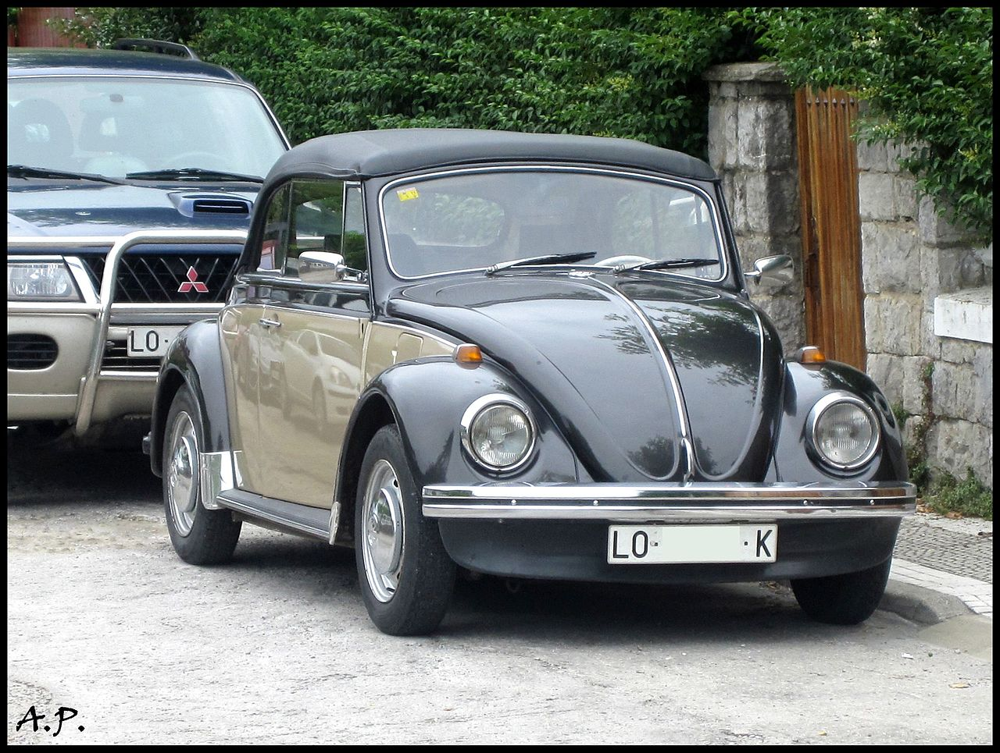

Les transports diesels
Les moteurs diesels fruit des travaux de l'ingénieur allemand Rudolf Diesel de 1893 à 1897, le moteur Diesel appelé également moteur à allumage par compression est un moteur à combustion interne dont l'allumage est spontané lors de l'injection du carburant, par phénomène d'auto-inflammation lié aux températures élevées dans la chambre de combustion. Celles-ci sont atteintes grâce à un fort taux de compression (rapport volumétrique de 14 à 25:1), permettant d'obtenir une température de 700 à 900 °C. Pour les petits moteurs des bougies de préchauffage sont souvent utilisées pour permettre un meilleur démarrage à froid, en augmentant, temporairement, la température d'un point de la chambre de combustion. Pour les moteurs de bateaux et les gros moteurs fixes à fioul lourd, on chauffe celui-ci à haute température pour permettre le démarrage.
Les avantages
Rendement
Les raisons du succès du moteur Diesel dans l'automobile, au-delà d'avantages fiscaux qui relèvent de choix plutôt politiques que techniques, tiennent essentiellement à son rendement supérieur à celui du moteur à essence du fait d'un taux de compression plus élevé. En résulte une consommation volumique de carburant plus faible que dans un moteur essence.
Le rendement du Diesel profite encore de l'apport de technologies comme la suralimentation ou l'injection directe, combinées à une pulvérisation plus fine et mieux contrôlée du gazole dans la chambre de combustion, et à une gestion plus précise des ouvertures et fermetures des soupapesB 1.
Robustesse
Le moteur Diesel peut brûler de l'huile végétale à la place du gazole. Pendant la Seconde Guerre mondiale, devant la pénurie de pétrole, des recherches ont d'abord été menées pour développer l'huile végétale en tant que carburant alternatif, mais elles finiront par être abandonnées face à la concurrence du bois et au réapprovisionnement progressif en pétrole17.
Il est aujourd'hui possible de faire usage d'un tel carburant dans une automobile de tourisme, à condition d'adapter son circuit d'alimentation et de surveiller son entretien, l'huile végétale présentant par rapport au gazole une plus grande viscosité, un indice de cétane plus bas et des impuretés spécifiques18. De nouveaux carburants à base végétale transformés et raffinés sont par ailleurs en cours d'étude, comme le diester et le NExBTL, mais ils restent encore coûteux à mettre en œuvre comparés aux huiles végétales brutes recyclées19.
L'utilisation d'huile végétale pure en guise de carburant est tolérée dans de nombreux pays, notamment en Allemagne, mais reste à ce jour interdite en France20.
Les poids lourdsN 4 peuvent également recourir à une émulsion d'eau dans le gazole (de l'ordre de 10 à 15 % du mélange). D'une part, les gouttes de carburant injectées dans la chambre de combustion voient leur taille diminuer, ce qui conduit à une meilleure combustion, et donc moins de particules rejetées. De l'autre, la présence d'eau dans la chambre réduit sa température, limitant ainsi l'émission de NOx. La technique impose toutefois un moteur suffisamment robuste (matériaux résistant à l'oxydation générée par l'eau, système d'injection adapté), et entraîne une augmentation de la consommationB 2.
Progèes en dépolution
De même que les autres systèmes de motorisation, le moteur Diesel a connu des améliorations au cours des dernières décennies. L'avantage principal de ce type de moteur est de produire à consommation égale, du fait de son rendement supérieur, des émissions de CO2 de l'ordre de 10 % plus faibles que son équivalent essence21. Il engendre également moins de monoxyde de carbone (qui s'oxyde rapidement en dioxyde de carbone dans l'atmosphère) et d'hydrocarbures imbrûlés que les moteurs à essence. L'arrivée progressive des filtres à particules et des systèmes SCR et EGR a contribué en outre à limiter les émissions de NOx et de particules fines, même si celles-ci restent beaucoup plus élevées que sur les moteurs à essence22.
La conclusion
Le moeteur diesel est beaucoup plus abordable qu'un moteur életrique et offre des rendements plus élevé pour des coûts moindre .
